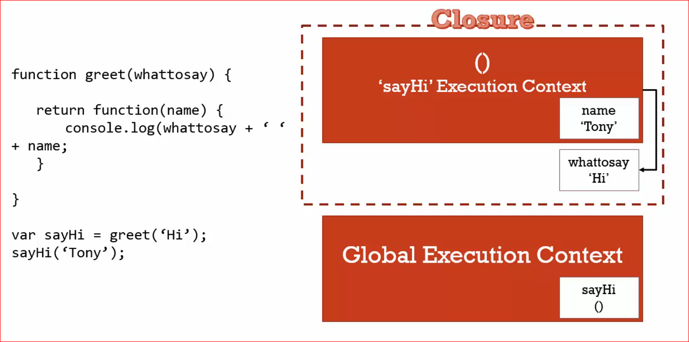

JavaScript - The weird parts
Syntax Parcers - Execution Context - Lexical Environments
Syntax Parcers
Es un programa que lee el código que escribimos, entiende lo que hace y revisa si la gramatica es valida, se llama compilador y convierte el código en un código que la máquina pueda entender
Lexical Environment
El lugar fisico en donde se encuentra el códgio que escribimos. Sirve para saber el uso de la memoria y lo que ese código puede usar dependiendo de lo que lo rodee
Execution Context
Es una envoltura que maneja el código que se está ejecutando, Hay muchos lexical environments, el que se está ejecutando es manejado a través del execution context y puede contener muchas mas cosas de las que están escritas en nuestro código.
Name/Value pairs and Objects
Name/Value pairs
Un Nombre que apunta o mapea a un unico valor.
El nombre puede ser difinido mas de una vez pero, solo puede tener un valor en cualquier contexo dado.
El valor pueden ser mas parejas nombre/valor.
ciudad = 'bogota'
nombre: ciudad
valor: bogota
Objeto
Un objeto es simplemente una colección de parejas nombre/valor, por ejemplo:

The Global environment and The global object
Cuando hablamos de global, hablamos de algo que es accesible desde cualquier parte de nuestro código y siempre hay dos cosas que se creán automaticamente para nosotros en el contexto global que son un Global Object y this, estos dos
objetos son creados para nosotros por el engine de JavaScript.
Si queremos ver esto, lo que podemos hacer es simplemente abrir en nuestro explorador un archivo html que no incluya ningúna tipo de JS asociado o podemos vincular un archivo .js pero que no contenga nada, si nos vamos a dev tools de nuestro explorador
y en la consola escribimos window o this lo que vamos a ver es lo siguiente:

Lo que nos devuelve la consola es un objeto global llamado window en ambos casos, tanto con this como con window, esto solo sucede porque estamos en el contexto global, en donde window es básicamente el contexto global
y this se refiere al contexto en donde lo estamos llamando que en este caso son lo mismo.
El concepto global significa sencillamente que no estamos dentro de ninguna función.
The Execution Context: Creation and 'Hoisting'
Que pasa cuando en JS declaramos una variable y una función y logueamos la variable y llamamos la función? de esta forma:

Si lo hacemos de esta manera lo que pensamos es que vamos a ver en la consola primero el valor de a y después de el valor de b y eso es efectivamente lo que veremos:

Ahora la pregunta es, que pasa si movemos hacia arriba el llamado a la variable y a la función?

Si ejecutamos este código en la consola del explorador vamos a ver lo siguiente:

Que pasó?? Antes tanto el llamado a la variable como a la función devolvían los valores correctos pero ahora la variable nos devuelvle el valor de undefined y la función el valor correcto.
Se dice que al momento de ejecutarse el código sucede algo que llaman 'Hoisting' y que lo que supuestamente sucede es que la declaración de variables y de funciones son movidas hacia la parte mas alta del código, pero si esto realmente sucediera,
por qué el valor devuelto a nuestra variable es undefined mientras que a nuestra función si es el correcto?
Lo que realmente pasa es que la creación de un Execution Context sucede en dos fases, una es la Fase de Creación que es en donde sucede lo siguiente:

Durante ese proceso de prepara el espacio en memoria para las funciones y las variables, que es lo que realmente es hoisting, se toma unicamente lo que está antes de una asignación = por esta razón es que en el caso de la variable se toma solamente
el nombre var a y la función se toma completa porque no hay asignación. Al tomar el lado izquierdo de la asignación el engine le asigna un marcador de posición o placeholder con el valor de 'undefined' el cual es redifinido en la fase de
ejecución si la variable es invocada después de habersele asignado un valor. Siempre es mejor idea invocar variables y funciones después de haber sido declaradas.
JavaScript and 'Undefined'
Como vimos antes, undefined es un valor que les da el engine de JS a las variables en la fase de creación, así todas las variables tengan un valor asignado siempre se les dará el valor de undefined en la primera fase, ya después en la fase de ejecuciónm,
el valor de la variable será actualizado si al momento de que esa variable sea usada su valor ya haya sido asignado.
En caso
The Execution Context - Code Execution

La fase dos es basicamente la ejecución por parte del engine de linea por linea de nuestro código, ya despues de haber sido crerado el objecto global, this y el environment externo.
Single Threaded, Synchronous Execution
Single Threader
Un comando se ejecuta a la vez, no mas de uno a la vez.
Asynchronous
Muy parecido al anterior, un comando a la vez! pero además en orden de acuerdo a como van apareciendo.
Function Invocation And The Execution Stack
Invocation
Invocar significa llamar una función, hacer que se ejecute y lo hacemos con el nombre de la función y parenthesis: a();, pero que pasa cuando invocamos una función? pensemos en el siguiente ejemplo:

Cómo sabemos, JS es Synchronous y Sinlge Threaded y por lo tanto ejecuta una linea por vez y en orden, y sabemos que un contexto de ejecución consta de dos fases, la de creación y la de ejecución.
En este ejemplo en la primera fase la función a y la función b serán guardadas en memoria y en la segunda fase se ejecutará el código linea por linea.
-
Lo primero en ejecutarse será la función a ya que es la primera en ser invocada a(); en el contexto global, como es una función, para su ejecución se crea un nuevo contexto de ejecución (Execution Context) que es apilado sobre
el contexto global, esto se denomina Pila de Ejecución (Execution Stack):

Cada contexto de ejecución tiene la fase de creració y de eejecució y además tiene su propio espacio para la creación de variables y de funciones.
-
Lo siguiente en suceder es la invocación de la función b b(); que sucede dentro de la función a y otro contexto de ejecución es creado y apilado sobre el anterior:

Al ejecutarse el contenido de b el contexto de ejecución es movido fuera del stack y se ejecuta el siguiente hacia abajo que en nuestro caso será a.
Los contextos de ejecución se van procesando de arriba hacia abajo
Function, Context, And Variable Environments
Cuando creamos una variable debemos tener claro que pasa en cada uno de los contextos de ejecución, como ya vimos, cada función crea un contexto y si las variables son declaradas dentro de un contexto, el valor de la variable solo se verá afectado
si es modificado dentro de ese mismo contexto, si hay otra variable con un mismo nombre declarada dentro de otro contexto, su valor no se ve afectado si su nombre cambia en un contexto diferente, veamos un ejemplo claro:

- La primera variable es declarada en el contexto global
var myVar = 1;
- La función a es invocada
a(); y dentro de su contexto de ejecución se declara una nueva variable myVar var myVar = 2;
- dentro de la función se invoca la función b y dentro de su contexto de ejecución se declara una nueva variable con el mismo nombre myVar
var myVar; pero no se le da ningún valor
Que vemos en la consola cuando ejecutamos este código:

A pesar de que las variables hayan sido declaradas multiples veces con un mismo nombre, el valor con el que fueron declaradas se mantiene porque fueron creradas en ambientes (environments) distintosx
The Scope Chain
Cuando hablamos de Scope nos referimos al alcance que tienen cada una de las funciones o variables que declaramos en nuetsros código, como vimos antes, cada una de las funciones creran un contexto de ejecución propio y que si una variable con
un mismo nombre es declarada dentro de diferentes contextos de ejecución su valor solo dependerá de los cambios que se hagan dentro de su propio contexto
Tambien vimos que cuando un contexto de ejecución es creado una de las cosas que también es creada para nuestro uso es el Outer Environment o entorno externo, esto es sencillamente una referencia a su enteorno externo mas próximo, veamos:

En este ejemplo tenemos dos funciones declaradas y declaramos la variable myVar en el contexto global y dentro del contexto de la función a. Dentro de la función b buscamos imprimir en consola el valor de myVar que valor
veremos?
Aquí debemos tener en cuenta lo que se denomina como Lexical Environment que se refiere al entorno dependiendo de donde ha sido la función o la variable fisicamente declarada, y como fisico nos referimos a su posición de acuerdo al resto de
declaraciones, el lugar en que hayamos escrito nuestra función.

- En el código que escribimos tanto a como b se encuentran al mismo nivel, las dos declaradas sobre el contexto global
- La variable myVar es declarada sobre el contexto global y dentro del contexto de la función a.
- la función b es invocada dentro de la función a
- Aunque la función b sea invocada dentro de a, la función b fué declarada sobre el contexto global, al no encontrar la variable myVardentro de su contexto entonces va a buscar en su entorno externo mas cercano que en este
caso es el contexto global en donde si encuentra la variable que busca
var myVar = 1; y por lo tanto 1 es el valor que veremos en la consola.
Cuando una función es invocada siempre va a tratar de buscar el valor de sus variables en su contexto de ejecució primero, si no la encuentra se va a iniciar un proceso conocido como Scopr Chain que es basicamente la busqueda de la variable
a través de todos los entornos externos que sean directamente vinculados:

Scope, ES6, and let
Scope
Es en definitiva En donde la variables se encuentra disponible en nuestro código dependiendo si es la misma variable o una copia nueva.
ES6
La última version de JavaScript, ECMASCRIPT 6 o ECMASCRIPT 2016
let
let es una nueva forma diferente de declarar variables, let permite usar block scoping vamos a hablar de ella mas adelante.
Asynchronous Callbacks
Como ya vimos JS es un lenguaje que se ejecuta de forma sincronica (Syncrhonous) lo que significa que el código se ejecuta linea por linea, en JS no es posible ejecutar varias lineas de código a la vez, esto se conoce como single threaded
Como también ya sabemos cada función va creando un Execution Stack que es el apilamiento de contextos de ejecución, pues bueno, lo que sucede es que el JavaScript Engine tiene algo llamado Event Queue o Cola de eventos. La cola
de eventos es una fila de eventos que se va creando y que el engine va ejecutando de acuerdo a como vaya terminando cada uno de los contextos de ejecución que tiene pendientes, tan pronto como termine un Execution Stack el engine se dirije
al Event Queue y ejecuta le siguiente tarea pendiente, veamos en la siguinete imagen:

Aquí tenemos una pila de contextos ejecutandose, cuando esta pila se haya completado el engine seguirá con la siguiente tarea o evento que en este caso es un click y ejecutará su contexto. No es posible que JavaScript corra o ejecute mas de un contexto de ejecución al tiempo lo vamos a comprobar con el siguiente ejercicio:

Cuando corramos este código en la consola y hagamos click sobre la página, lo que vamos a ver es que en la consola no va a imprimirse nada sino hasta que la función waitThreeSeconds termine de ejecutarse a los tres segundos, osea, hasta que
su execution stack no sea completamente ejecutado, durante los 3 segundos los eventos click van a ser puestos en cola para ser ejecutados cuando el engine se desocupe.

A pesar de que hagamos click muchas veces sobre la página, estos clicks no van a ser impresos en consola sino hasta después de que los 3 segundos hayan pasado.
Types and JavaScript
Si hemos venido de otro tipo de lenguajes de programación, vamos a ver que en JS los tipos de variable de declaran de una forma diferente.
Dynamic Typing
En JS no le tenemos que decir al engine que tipo de información va a contener la variable, el engine s eencarga de decifrar el tipo de información mientras el código se va ejecutando.
Primitive Type
Cómo sabemos JS usa un método que se llama Dynamic Typing y por lo tanto no tenemos que definir el tipo de informació de cada variable sino que el engine lo decifra por si solo, esto no quita que hayan diferentes tipos de datos o información
y este tipo de datos se denominan Primitive Types.
Primitive Types
Son tipos de datis que representan un solo valor, mas facil, todo lo que no es un objeto pues un objeto es una colección que puede ser diferentes tipos de información.
- UNDEFINED: Es inexistencia, una variable que no existe. No debemos asignar este valor a ninguna variable, es solo para uso del engine al momento de crear la memoria para nuestro código.
- NULL: También reperesenta inexistencia, este si lo podemos usar para definir una variable igual a nada
var a = null;
- BOOLEAN: Puede ser o true o false solo uno de los dos
var a = true;
- NUMBER: En JS solo hay un tipo numerico y siempre es un floating point number o número decimal, aunque se puede volver entero o integer es realmente un decimal.
- STRING: Es una sequencia de caracteres que se encuentran entre comillas simples ' ' o dobles " ".
- SYMBOL: Es usado en ES6, hablaremos de el en otro momento.
Operators
Un operador es una función que es sintacticamente escrita de manera distinta. Los operadores generalmente reciben un parametro y devuelven dos
Cuando usamos un operador +, -, >, <, etc lo que realmente estamos usando es una función que ha sido pre escrita para que nosotros podamos usar los operadores más rapidamente, en lugar de tener por ejemplo que escribir: function suma(a, b){return a + b} lo que hacemos es a + b, lo mismo sucede con todos los operadores
Operator Precedence and Associativity
Operator Precedence
Es simplemente que funcion de operador es llamada de primero, las funciones son llamadas en order de precedencia, la precedencia mas alta gana.
Operator Associativity
La asociatividad determina la dirección en la que operadores con la misma precedencia son evaluados.
Ver documento en MDN
Este documento es importante porque nos muestra los valores de precedencia que tiene cada operador y además nos muestra la asociatividad o dirección en que operdaores iguales son evaluados.
Qeu pasa si tenemos lo siguiente:

Si alguna vez en nuestras vidas tuvimos clase de matematicas, sabemos que la multiplicación va primero y por lo tanto el resultado es 15. Si vemos la tabla de precedencia veremos que el valor que tiene la multiplicación es 14 mientras que suma tiene
un valor de precedencia de 13, los mayores ganan!
Y ahora que pasa si tenemos oo siguiente:

Que vamos a ver en la consola?
Para saberlo tenemos que ver el sentido de asociatividad que tiene la igualdad =, en la tabla vemos que es de derecha a izquierda lo que quiere decir que primero se definen los de la derecha que en nuestro caso será b = c o en otras palabras, b es igual a c, c es 4 y por lo tanto b será 4. a será lo que es b y como en este punto b ya es 4, entonces a es también igual a 4.
Coercion
En JS coercer u obligar se refiere la acción que genera el engine en algunos momentos sobre algunos valores, lo que hace JS es convertir su tipo de valor a otro tipo de valor.
Por ejemlpo tenemos lo siguiente var a = 1 + '5' como
vemos uno de los valores es declarado cómo un número y el otro como un string, cuando mostramos el resultado en la consola veremos un 12. Esto sucede porque el otro es un string y por lo tanto el engine convertirá el número en un string
para buscar darle un resultado coherente al usuario.
Comparison Operator - Operadores de comparasión
Muchas veces usamos operadores de comparación y aunque creemos que tenemos claro el resultado que nos va a arrojar en algunas ocasiones nos podemos sorprender (a mi me sucedió) para comenzar, veamos el siguiente ejemplo: 1 < 2 < 3 en engine en este ejemplo nos va a arrojar true lo que en realidad tiene sentido porque 1 es menor a dos y dos es menor que 3.
Ahora intentemos lo siguiente: 3 > 2 > 1 que vemos en la consola??

Vemos false por que? si 3 es mayor que 2 y 2 es mayor que 1?
Si vamos a mirar el documento que nos habla sobre la precedencia en los operadores aquí el link de nuevo vemos que el operador > es analizado por el engine de izquierda a derecha, entonces que pasa?

Pues lo que sucede es que primero se evalúa la primera expresión 3 > 2 que dá como resultado el boolean true quedando la expresión true > 1 por ser evaluada. Pero que pasa aquí? pues bueno, como sabemos
el engine va hacer lo posible por dar un resultado coherente y en este caso va a transformar el valor del boolean true por el número 1 dejando la siguiente expresión 1 > 1 y como sabemos 1 no es mayor que 1 y el resultado
va a ser false.
Así como el engine cambia el valor de true a 1, hay muchas otras combinaciones y cambios que pueden terminar dando un reultado diferente, aquí no vamos a profundizar en este punto pero si es importante tener claro que el operador == nos
resuelve igualdad por ejemplo: 3 == '3' = true en caso de que uno de los dos valores sea de un 'tipo' diferente entonces será cambiado (la mayoría de las veces) para que la operación tenga un resultado.
Por otro lado tenemos el operador === que nos resuelve una igualdad estricta por lo tanto 3 === '3' = false y 3 === 3 = true ningún valor es cambiado, solo se devuelve true si es una igualdad completamente
estricta.
Booleans Existence
Es importante saber que la falta de existencia como undefined, null o "" son evaluados como booleans false sabiendo esto podemos usar esta evaluación a nuestro favor, siempre que usamos las declaraciones condicionales (conditional statements)
if lo que se encuentra dentro de la condición siempre va a buscar ser evaluado como un boolean, por ejemplo:

Cuando ejecutamos esta declaración en la consola nada va a ser impreso, por que? porque a la variable a no se le ha dado ningún valor y como sabemos, en la fase de creación a todas las variables se les asigna por el engine el valor de undefined el cual al ser evaluado como boolean nos da el valor de false.
0 también es false
Es importante tener en cuenta que el valor 0 también es evaluado como falso por el engine y 0 no tiene que significar inexistencia, eso depende de nuestro código y que queremos que haga, entonces is por alguna razón el valor de la variable
llega a tener el valor de 0 pero lo que queremos es evaluar su existencia (undefined, null, '') es posible que tengamos un resultado diferente al que esperamos, en este casos podríamos ajustar mejor la condición de esta manera: (a || a === 0),
así si la primera condicion es inexistente incluyendo 0, será evaluada como false, pero la segunda será true porque a será en nuestro ejemplo igual a 0 por lo tanto la condición será evaluada como true false||true da como
resultado true.
Default Values
Una forma interesante de asignar valores por defecto es mediante el uso de || por ejemplo podemos decir nombre = nombre || 'no hay nombre', como sabemos el operador or evalúa las condiciones buscando convertirlas en
booleanos, así el primoer que resulte true será el valor que se asignará, en este caso si nombre resulta falso ej: undefined, null, false o 0 entonces la segunda será evaluada, el engine la convertirá u obligará a ser booleano
y como la segunda condición es un string no vacío, entonces será true y el valor que se le asignará a la variable nombre será no hay nombre.
FRAMEWORK ASIDE:Default Values
Es muy probable que en algún momento queramos usar diferentes frameworks o librerias en un mismo proyecto y también es posible que estas usen el contexto global para declarar variable y podría suceder que la declaración de variables colisione, en
estos caso es muy probable que veamos cosas así: window.nombreDeVariable = window.nombreDeVariable || 'otro valor' lo que se logra con esta verificación es que no se sobreescriban valores que ya existen o variables que ya están declaradas
y definidas, como ya vimos esto significa: Si la variable ya existe entonces no la modifique pero si no existe cambiela por este nuevo valor que le estoy dando.
Objects and Functions
Como ya vimos antes los objetos se pueden componer de variables primitivas como numeros o string, también puede contener otros objetos o también pueden contener método que en realidad son funciones que devuelven algún valor.
Cómo creamos lo objetos?
En realidad podemos crerar un objeto de diferentes formas, resumidas son las siguientes:
- Object literal: Es a través del uso de los corchetes o curly braces
var carro = { marca: 'Ferrari, modelo: 1989, modelo: Testarossa' }
- También lo podemos hacer a través del constructor Object()
var carro = new Object()
- Podemos usar una función constructora
var Obj = function(name){
this.name = name
}
var miCarro = new Obj('Mi Nave');
Acceder a los objetos y agregar propiedades
Cómo vimos antes, con lo corchetes o curly braces podemos declarar un objeto y además decalarar propiedades al mismo tiempo, agregar propiedades se puede hacer de multiples formas así como acceder a ellas
- Con parentesis cuadrados [ ] - tenemos el objeto carro ya declarado y declaramos la propiedad marca -
carro['marca'] = "Alfa Romeo" Para acceder a la marca hacemos lo siguiente:
carro[marca]
- Con la notacion punto . - funciona igual que los brackets ya cuando tenemos un objeto declarado, para agregar una propiedad al objeto carro:
carro.marca = 'Tesla' Para conocer el valor de la propiedad marca del objeto carro:
carro.marca
También podemos crerar objetos dentro de objetos de la misma usando el mismo principio
vehiculo.carro.marca = 'Audi'
Y accedemos de la misma forma:
vehiculo.carro.marca
Objects and Object Literals
Cuando hablamos de objetos anteriormente nos referimos la forma de crear objetos mediante new Object() y mediante { } bueno, en realidad el uso de los corchetes es simplemente un atajo para hacer lo mismo y se le llama Object Literal y como vimos también podemos inicializarlo al mismo tiempo agregandole propiedades:

FRAMEWORK ASIDE: Faking Namespaces
Namespace: A container for variables and functions, typically to keep variables and functions with the same name separate.
Los namespaces en los lenguajes de programación se refieren a un container que contiene un grupo único de identificadores y simbolos, en JS no los tenemos pero los podemos emular con el uso de objetos.
Por ejemplo queremos hacer uso de una variable
que tenga un mismo nombre para diversos objetos, como lo vimos ahora con el objeto carro, es muy probable que queramos tener varios carros pero cada uno con diferentes caracteristicas aunque mismas propiedades (marca, no de puertas, etc):

De esta forma podemos tener el mismo nombre de variable que pertenece a un objeto diferente.
JSON and Object Literals
Si hemos visto anteriormente la forma en la que se escribe JSON y vemos la forma en que se escribe un Object Literal vamos darnos cuenta que son muy similares:

Cómo vemos son muy parecidos y lo que cambia son las comillas en los nombres de las propiedades. JSON es un formato muy util para compartir información y JS por medio de un par de funciones nos permite pasar la información de JSON a Object Literal
y viceversa.
JSON.stringify nos permite pasar de Object literal a JSON:

JSON.parse nos permite pasar de JSON a Object Literal:

Las Funciones son Objetos!
CONCEPTUAL ASIDE: By Value vs by Reference
Este es un concepto que debemos tener claro. Cuando asignamos a una variable un valor primitivo como un numero on un string, se asigna un espacio en la memoria que contiene ese valor y una dirección que permite que la variable apunte a ese
valor a = 3;. Si asignamos esa variable a otra variable b = a; como el valor de a es un primitivo, entonces, se asignará un nuevo espacio en memoria para bque contendrá una dirección diferente que apunte a
su valor, en resumen en memoria habrá en un comienzo y de acuerdo a nuestro ejemplo una variable a y otra b y cada una apuntará a un valor 3 completamente diferente e independiente ubicados en una dirección en la memoria completamente
distint.

Esto lo podemos probar de la siguiente manera:

Aunque b haya sido declarada con el valor de a aunque cambiemos el valor de a el valor de b no cambia.
Con los Objetos pasa algo distinto, si al objeto c le asignamos el objeto d entonces cuando modifiquemos (también se dice mutar en programación) el objeto c, este cambio también se verá reflejado en el objeto d,
esto sucede porque a diferencia de lo que pasa con las valores primitivo, en los objetos se crea una Referencia al objeto y NO se crea un objeto nuevo como pasa con los primitivos. Osea que tenemos dos variables que apuntan a una misma direcció
en la memoria.

Lo probamos con el siguiente ejemplo:

Aunque cambiamos solamente el objeto c vemos que el valor de la propiedad país cambió en los dos objetos, el mismo principio aplica así pasemo el objeto como un parametro dentro de una función

Importante! el simbolo asignación o igual (=) es el que define si un elemento se crea o no en la memoria, en caso de que el Objeto asignado no se encuentre ya en la memoria, entonces será creado en una nueva ubicación, hay que tener esto claro
poque si por ejemplo tenemos:

A pesar de que en un inicio las dos variables apuntaban a un mismo objeto, al una de las variables ser asignada a un objeto distinto, este nuevo objeto es creado en memoria y solo la variable al que ha sido asignado apuntará a su ubicació en memoria.
Objects, functions and 'this'
Seguramente hemos visto el uso de this en algún código o lo hemos usado nosotros mismos, pues bueno, seguramente lo vamos a ver muchas veces mas porque se usa con bastante frecuencia, pero bueno, que es this?
Generalmente se piensa que this hace referencia al contexto desde donde se invoca como una función o un objeto, pues bueno si aún lo creemos así debo decirles que NO es correcto, pues this hace solamente referencia al contexo principal
de un Objeto y no de una función, ya sé que dijimos que las funciones son objetos pero son objetos especiales, son objetos de primera clase que tienen 'poderes' especiales por decirlo de alguna manera. En resumen, THIS hace referencia al primer nivel del contexto de un Objeto (no funciones) lo demostramos de la siguiente forma:
Mostremos en la console en el contexto global el valor de this:

Nos devuelve el contenido del contexto global que es Window
Ahora dentro de una función mostremos en consola el valor de this:

Seguimos viendo el contenido del objeto global Window a pesar de que estamos dentro de una función.
Ahora, dentro de un Objeto creemos un metodo que imprima en consola el valor de this:

Ahora vemos que el valor mostrado en la consola es el objeto dentro del que se encuentra el método y NO el contexo global, esto nos demuestra que this lo podemos usar principalmente dentro de los objetos si es que queremos referirnos al contenido
de ese objeto de alguna manera, en nuestro ejemplo podemos cambiar la marca de nuestro carro refiriendonos a this:

Importante! que pasa si dentro de un método tenemos otra función que busca hacer uso del contenido del objeto mediante this? Lo primero que pensamo de acuerdo a lo que vimos es que this dentro de un objeto hace referencia al objeto
en el que se encuentra, eso lo pensamos muchos y a lo mejor no estaría mal que fuera así, de hecho seríá hasta lógico pero NO ES ASÍ cuando creamos una función dentro de un método, y esta función hace uso de this el contexto al que
se hace referencia es de nuevo el contexto global:

En el ejemplo anterior vemos como al tratar de imprimir en consola el contenido de this mediante una función que se encuentra dentro de un método lo que muestra la consola es el contenido del contexto global o Window. Una solución común para
estos casos es crear una variable dentro del Objeto que haga referencia a this esta variable es muchas veces llamada self.
self
Esta es una variable que se crea dentro del objeto y que resuelve el comportamiento de this dentro de funciones creadas dentro de los método. Cómo ya vimos antes, cuando declaramos una variable y le asignamos un objeto, lo que hace el engine
es crear una referencia hacia el objeto, por lo tanto podemos hacer self = this aquí un ejemplo:

Ahora vemos que la referencia del objeto se ha mantenido y que el objeto impreso en la consola es el mismo objeto en el que se encuentra la función.
ARRAYS: Collections of anything
En JS a diferencia de otros lenguajes de programación, podemos poner lo que queramos en un array y combinarlo como queramos, podemos tener en un mismo array objetos, funciones, primitivos lo que queramos, por ejemplo:

Tenemos un array que contiene un numero, una función y un objeto y esto es perfectamente válido porque es permitido por el engine de JS. Además podemos hacer uso de los elementos de los arrays o colecciones como mejor nos parezca, por ejemplo podemos
usar en este caso la función y el contenido del objeto para imprimir algo en la consola:

'arguments' and SPREAD
Argumentos son aquellos valores o parámetros que le pasamos a una función con el fin de que de alguna forma los procese, por ejemplo:
function mifuncion(argumentos){
//dentro de la función hago uso de los argumentos
}
>Es probable que otros lenguajes de programación nos devuelvan errores cuando la función invocada no contiene todos los argumentos que en un inicio fueron declarados con la función, JS no nos devuelve ningún error, lo que si va devolver es el valor
'undefined' pues la variable fue declarada pero nunca asignada.
JS contiene dentro de las funciones una variable que se llama arguments y que lo que hace es devolver el valor de los argumentos pasados a la función en una especie de array que no es en realidad un array porque no cotiene los métodos
que contiene un array como pop, unshift, solo tiene el método length que nos devuelve el largo del array y bueno también podemos devolver el contenido de acuerdo a su ubicación dentro del array e.g: array[2].
Aquí hacemos uso de la variable arguments:
function myCasa(cuartos, banos, jardines){
console.log('Mi casa tiene '+banos+' baños '+cuartos+' cuartos y '+jardines+' jardines');
console.log(arguments);
}
myCasa(3, 2, 2)
Ahora corremos en consola:

Parece ser que arguments va a dejarse a un lado en un futuro y se usarán otros métodos que son parte de ES6.
FRAMEWORK ASIDE: Function Overloading
En JS no hay function overloading cómo en otros lenguajes
CONCEPTUAL ASIDE: Syntax Parsers
DANGEROUS ASIDE: Automatics Semicolon Insertion
El Engine de JS va analizando caractér por caractér todo el syntax del código que escribimos y de acuerdo a lo que va viendo va tomando decisiones para ejecutar tareas, pues bueno, dentro de las acciones que toma el Engine es la de agregar automaticamente
los punto y coma ; (semicolon en inglés) faltantes en nuestro código lo que hace que de alguna manera no sea obligatorio escribirlos y generalmente nuestro código funciona como esperamos. Pero esto no siempre sucede y es probable que el Engine nos
inserte un punto y coma en donde no queremos y que al final el resultado que esperamos de nuestro programa, por esto es importante tener buenos habitos al momento de escribir código.
Veamos el ejemplo siguiente:
function juego(){
//nuestro código
return //pasamos a la linea de abajo
{
personaje : 'Zelda'
}
};
console.log(juego());
Viendo el código anterior seguramente pensemos que al ejecutar el código vamos a ver en la consola el valor del objeto que debe ser devuelto por la función {personaje : 'Zelda'} pero lo corremos y vemos lo siguiente:

Nos devuelve undefined pero por que? pues bueno, este es el resultado de la inserción automatica de punto y coma del engine, al ver que seguido del método return venía un retorno de carro (carriage return en ingles) o Enter para
pasar a la linea de abajo, pues el Engine asumió que debía insertar un punto y coma por lo tanto la función no devolvió nada porque terminó en return; por esta razón es mejor siempre evitar cambios de linea innecesarios y escribir
los puntos y comas así no sea del todo obligatorio, nos evitamos problemas y perder muchisimo tiempo buscando errores en nuesctro código que como estos pueden ser muy dificiles de encontrar.
Ahora probemos la siguiente función y vemos como SI nos devuelve lo que estamos esperando:
function juego(){
//nuestro código
return { //continuamos escribiendo sobre la misma linea
personaje : 'Zelda'
};
}
console.log(juego());
FRAMEWORK ASIDE: Whitespace
Immediately Invoked Function Expressions (IIFE)
Son funciones que como su nombre lo dice se invocan de inmediato, osea que no tenemos que invocarlas en una linea aparte. Generalmente cuando tenemos una función hacemos lo siguiente:
//Function expression
function saludar(nombre){
console.log('Hola ' + nombre +' cómo estás?')
}
saludar('Hector') //invocamos la función
//Function declaration
var saludar = function(nombre){
console.log('Hola ' + nombre +' cómo estás?')
}
saludar('Juan'); //Invocamos la función
Cómo sabemos la única forma de que estás funciones sean ejecutadas es invocandolas después de haberlas declarado en una linea aparte y para invocarlas usamos el nombre y los parentesis e.g. saludar(), las IIFE son funciones que
básicamente se invocan a ellas mismas al momento de ser declaradas, veamos el siguiente ejemplo:
var nombre = function (nombre){
return nombre;
}('Juan') // Agregamos los parentesis al final de la función para que se invoque de inmediato y le podemos pasar argumentos si queremos
var saludar = function (){
console.log('Hola ' + nombre + ' cómo estás?') //solo hacemos referencia al nombre de la funcione sin necesidad de invocarla
}
saludar()
Al ejecutarse de inmediato ya no tenemos que invocarla de nuevo sino que solo usamos su nombre pues ya en este momento se ha ejecutado y el valor de función nombre para nuestro ejemplo es un string.
También simplemente podemos crear una función que sin necesaidad de ni siquiera hacer referencia a su nombre podemos hacer que se ejecute tan pronto como sea leída por el engine, lo hacemos de la siguiente forma:
(function(nombre){ //Iniciamos la función con un parentesis
var saludar = 'Hola '+ nombre;
console.log(saludar + ' te saludo desde adentro de la IIFE');
}('Carolina')); //También le podemos pasar argumentos si queremos
//O le podemos pasr argumentos que se encuentren disponibles al momento de ser invocadas
var visitante = 'Adriana'; //Variable disponible
(function(nombre){ //Iniciamos la función con un parentesis
var saludar = 'Hola '+ nombre;
console.log(saludar + ' te saludo desde adentro de la IIFE');
}(visitante); //pasamos la variable
FRAMEWORK ASIDE: IIFEs and Safe Code
Anteriormente vimos que cuando creabamos una función también se creaba un nuevo contexto de ejecución (Execution Context) y que este contexto de ejecución es como un ambiente único que puede hacer uso de lo que se encuentre afuera suyo pero que lo
que se declara dentro solo está disponible dentro de su mismo contexto de ejecución o en funciones que se declaren adentro, pues bueno, teniendo esto claro es bueno tener en cuenta que las IIFEs nos sirven también para crear contextos de ejecución
que a lo mejor no queremos que contaminen o que compartan información con contextos externos, así pues cuando declaramos variables dentro de las IIFEs estas solo están disponibles dentro de ellas./
UNDERSTANDING CLOSURES 1
Siempre entender closures toma tiempo pues es una funcionalidad de JS que puede llegar algo abstranca y que lleva un poco al extremo los conceptos que hemos analizado hasta el momento pero el proceso que hemos llevado nos da las bases suficientes
para entender mas facilmente lo que es un Closure.
Lo vamos a ver inicialmente con un ejemlpo:
function saludo(greet){
return function(name){
console.log(greet + ' ' + name);
}
}
var diHola = saludo('Hola');
diHola('Juan');
Aquí vemos que lo que hacemos es devolver una función cómo resultado de otra función, pero ahora enfoquemonos en lo que sucede:
- Asignamos el resultado de la función
saludo('Hola') a la variable diHola osea que la función saludo ya ha sido invocada creando la variable greet que quedó con el valor pasado a la función que en este
caso es Hola y ha devuelto una función que está esperando a ser invocada y que espera que se le pase el argumento name.
- Invocamos la función devuelta que ahora tiene el nombre de diHola con el valor de Juan para nuestro ejemplo
diHola('Juan'), cuando corremos este código en consola vemos lo siguiente:

Si lo pensamos bien, cómo hace la función devuelta para recordar el valor de la variable greet si es que esa función ya había sido invocada y por lo tanto su contexto de ejecución había 'desaparecido'? Lo que sucede es que a pesar
de que es contexto de ejecución de ejecución haya desparecido recolectado por el garbage collector, la memoria que fue usada para crear ese contexto de ejecución sigue existiendo y por lo tanto la referencia a esa variables que fueron
creadas en ese contexto de ejecución puede seguir siendo utilizadas, a pesar de que un contexto de ejecución desaparezca del execution stack su variables pueden seguir siendo referenciadas desde otros contextos que se encuentran de de ese
contexto que desapareció.

En definitiva un closure es el encapsulamiento de los entornos a los que de todas maneras hiciera referencia aunque esos contextos que contenían las variables ya no existan. Esto no es algo que podamos generar nosotros o alterar, es algo con
lo que JS viene y de lo que podemos sacar provecho, esos entornos externos seguiran funcionando y el Engine se encargará de que sea el código que corramos, las variables a las que se supone que debe tener acceso sigan existiendo, basicamente mantiene el contexto intacto.
UNDERSTANDING CLOSURES 2
Aquí vamos a tener un ejemplo que seguramente va a parecer un poco mas complicado de entender pero que al final segurmanre nos va a permitir aún mejor lo que se puede lograr con los closures
function buildFunctions(){
var arr = [] //creramos un array - nada extraño hasta ahora
for (var i = 0; i < 3; i++){ //un for loop que funciona mientras i sea menor que 3
arr.push( //pasamos al array 3 diferentes funciones que van a mostrar en consola el valor de 1
function(){
console.log(i)
}
)
}
return arr;
}
var fs = buildFunctions();
fs[0]();
fs[1]();
fs[2]();
Como vemos es una función que adentro tiene un for loop y ese for loop debe ir empujando dentro de unr array las funciones que cuando sean invocadas van a imprimir el valor de i esto lo resaltamos porque es importante tenerlo claro.
Viendolo de esta manera con que nos deberíamos encontrar? Si cuando i = 0; el loop empuja una función dentro del array, y cuando i = 1; y también cuando i = 2; y como ya sabemos cada una de esas funciones va a mostrar
en consola el valor de i? Que valores van a ser realmente logueados? Es posible que nos vayamos a sorprender:

Es probable que esperaramos ver 1, 2, y 3 logueados en la consola pero no, en cambio vemos 3, 3, 3 por que pasó esto? pues bueno, en este caso debemos tener en cuenta el momento en que las funciones son invocadas y lo que ha pasado con
las variables que están siendo referenciadas en ellas.
En este ejemplo pasó lo siguiente:
- La variable fs se declaró con la invocació de la función buildFunctions y por lo tanto el for loop fue ejecutado
- Dentro del for loop se declaró la variable i esta variable tuvo primero el valor de 0 y la primera función fue empujada al array, después tuvo el valor de 1 y otra nueva función fue empujada al array, después tuvo
el valor de 2 y otra función pasó al array, finalmente tuvo el valor de 3 y como la condición fue negativa el for loop terminó y la variable i quedó con un valor de 3
- Cada una de estas funciones hace referencia a i que es la variable declarada en el for loop
- Después las funciones que se encuentran dentro del array son invocadas y loguean el valor de i en la consola
Recordemos que el for loop se ha ejecutado de primero al momento en que la variable fs fue declarada y para que este loop se detuviera, la condición tuvo que ser falsa y esto solo sucedió cuando el valor de i fue igual a 3 en este
momento el contexto de ejecución desapareció pero las variables siguieron en la memoria y aún se podía hacer referencia a ellas, y las otras funciones fueron invocadas mas adelante
Con ES6 se creó una nuevo forma de solucionar esto en caso de que lo queramos evitar y es mediante el uso de let. let es una nueva forma de declarar variables y lo que hace es crear un scope de bloque, en este caso lo que
hace es crear un scope diferente para cada variable lo que permite que cada vez que se cree no sea modificada por la asignació siguiente:
function buildFunctions(){
var arr = [] //creramos un array - nada extraño hasta ahora
for (var i = 0; i < 3; i++){
let j = i; //Se crea un scope diferente cada vez y cada uno de estos scopes contiene una variable j
arr.push(
function(){
console.log(j)
}
)
}
return arr;
}
var fs = buildFunctions();
fs[0]();
fs[1]();
fs[2]();
También hay otra forma de hacerlo aún usando ES6 y es creando un nuevo contexto de ejecución cada vez que la función sea empujada al array, de esta forma se estaría apuntando cada vez a un contexto diferente que contiene un valor de la variable
diferente:
function buildFunctions(){ var arr = [] //creramos un array - nada extraño hasta ahora for (var i = 0; i
< 3; i++){ arr.push( (function(j){ return function(){ console.log(j) } }(i)) ) } return arr; } var fs=b uildFunctions(); fs[0](); fs[1](); fs[2]();
FRAMEWORK ASIDE: Function Factory
Ahora que tenemos un poco mas claro lo que son los closures, podemos entonces aprovechar su existencia para en este ejemplo crear una fabrica de funciones. Lo que vamos a hacer es crear una función que va a devolver otras funciones que dependerán
del parametro que se pase al momento de invocar la función contendera o externa por decirlo de alguna manera.
function fabricarCarro(marca){
return function(color, velocidad){
if(marca === 'Ferrari'){
console.log('Quiero un carro '+ color + ' y que ande ' + velocidad)
}
if(marca === 'Bugatti'){
console.log('Quiero un carro ' + color + ' y que ande ' + velocidad)
}
}
}
var miFerrari = fabricarCarro('Ferrari'); //Invocamos la función una vez en donde se declara la variable con el valor 'Ferrari'
var miBugatti = fabricarCarro('Bugatti'); //Invocamos la función de nuevo en donde se declara la variable con el valor 'Bugatti'
miFerrari('rojo', 'rapdisimo!')
miBugatti('azul', 'mas rapido!')
En el momento en que declaramos la variable miFerrari la primera función es invocada, se crea un contexto de ejecución y la varible 'marca' es declarada con el valor que le pasamos, en este caso 'Ferrari', cómo la función ya se ejecutó
entonces el contexto de ejecucíon desaparece pero sus variables siguen en memoria y aún pueden ser referenciadas por las funciones internas.
Declaramos la segunda variable miBugatti con la declaración de la misma función y le pasamos un argumento que para esta es 'Bugatti', se crea un contexto de ejecución pero este a pesar de que es la misma función, es diferente y se encuentra
en una dirección diferente en la memoriam este contexto contiene la variable, el contexto desaparece pero la variable sigue estando al alcance de las funciones internas.
Al final lo que hacemos es pasar argumentos a las variables que en realidad son funciones y vemos que en la consola se loguean los comentarios dependiendo de cual fue la función que invcamos.
Closures and Callbacks
Si hemos antes usado JS seguramente hemos también hecho uso de closures y callbacks a lo mejor sin darnos cuenta pero el hecho es que se utilizan con bastante frecuencia, por ejemlpo cuando usamos setTimeout:
function pasarTiempo(){
var tiempo = 'Han pasado tres segundos';
setTimeout(function(){
console.log(tiempo)
}, 3000)
}
pasarTiempo();
Ahora seguramente lo vemos un poco mas claro, acá lo que está pasando es que el método setTimeout espera 3 segundos para ejecutarse después de que se haya invocado la función que lo contiene, al ejecutarse el setTimeout todavía puede
hacer referencia a las variables qexternas aunque ya la función hubiese sifo invocada tres segundo atrás, un perfecto ejemplo de Closures.
Por otro lado tenemos los callbacks que en resumen son Una función a la que le pasamos como argumento otra función para que sea ejecutada cuando la primera funcioón haya terminado:
function llamarCuandoTermine(funcionCallback){
var a = 'Un valor cualquiera';
var b = 'Otro valor cualquiera';
var c = a + b;
funcionCallback();
}
llamarCuandoTermine(function(){
console.log('Terminé')
})
llamarCuandoTermine(function(){
console.log('Yo también terminé')
})
call(), apply(), and bind()
Estos son algunos métodos que a lo mejor no conocíamos pero que son bastante útiles y nos podrían permitir reutilizar nuestro código de una manera bastante eficiente, comencemos con call:
bind()
bind() es un método que hace parte de todas las funciones, todas las funciones tienen acceso a estos tres métodos (call, apply y bind). Lo que en resumen bind() nos permite es hacer una copia de la función, asignarle un nuevo contexto
y pasarle argumentos que van a preceder los que sean pasados cuando la función es invocada. Un poco confuso? veamoslo con un ejemplo:
//Creemos un objeto cualquiera
var avion = {
asientos: 15,
velocidadMax: '700Km/h',
loguearConsola : function(){
return 'Tengo un avión con ' + this.asientos + ' asientos y que vuela a ' + this.velocidadMax;
}
}
var otroMensaje = function (arg1, arg2){
console.log(this.loguearConsola());//Se ve un poco raro, estos 'this' en este lugar apunta al objeto global que no contiene el método 'loguearConsola'
console.log('Mi hermano tiene ' + arg1 + ' años y mi hermana ' + arg2);
}
var darPoderesFuncion = otroMensaje.bind(avion);
darPoderesFuncion(32, 22);
//También podemos establecer valores que van a preceder a los de la funcion, mi hermano va a tener siempre 15:
var darPoderesFuncion = otroMensaje.bind(avion, 15);
darPoderesFuncion(32, 22); //Aunque le paso el valor de 32, 15 quedó como el primer valor, ahora 32 es el segundo y 22 el tercero
call()
Estos tres métodos hacen todos cosas por el estilo, en este caso lo que call hace, call hace básicamente lo mismo que bind hace a diferencia que call invoca la función de inmediato, veamos:
//Tenemos todo igual que antes
var avion = {
asientos: 15,
velocidadMax: '700Km/h',
loguearConsola : function(){
return 'Tengo un avión con ' + this.asientos + ' asientos y que vuela a ' + this.velocidadMax;
}
}
var otroMensaje = function (arg1, arg2){
console.log(this.loguearConsola());
console.log('Mi hermano tiene ' + arg1 + ' años y mi hermana ' + arg2);
}
otroMensaje.call(avion, 18, 15)
Al correr este código veremos que la función se ejecutó de inmediato, por lo tanto call no hace una copia como si lo hace bind, call invoca la función. También cambiamos con el primer argumento el lugar a donde apunta this y le
podemos pasar los argumentos que queramos.
apply()
Lo mismo que call con la diferencia que los argumento se pasan como un array no en comas, veamos:
//Tenemos todo igual que antes
var avion = {
asientos: 15,
velocidadMax: '700Km/h',
loguearConsola : function(){
return 'Tengo un avión con ' + this.asientos + ' asientos y que vuela a ' + this.velocidadMax;
}
}
var otroMensaje = function (arg1, arg2){
console.log(this.loguearConsola());
console.log('Mi hermano tiene ' + arg1 + ' años y mi hermana ' + arg2);
}
otroMensaje.apply(avion, [15, 32])
Usos Prácticos de estos métodos
Function Borrowing
Estos métodos pueden llegar a ser muy útiles si sabemos en que casos utilizarlos, por ejemplo, podemos usar tanto call como apply para algo que se llama function borrowing o prestamo de funciones, lo que hacemos es de alguna forma
pedir prestada la función de un objeto para usarla en mi objeto:
var carro = {
distancia: 270,
tiempo: 4,
velocidad: function(){
console.log('Mi carro va a ' + this.distancia/this.tiempo + ' kilometros por hora');
}
}
var bus = {
distancia: 350,
tiempo: 6,
}
//Tengo un objeto con el método que me da la velocidad pero en el otro no lo tengo y quisera usarla
carro.velocidad.call(bus, 500, 9); //carro le presta la funciona velocidad a bus
Function Currying
Es crear una copia de una función pero con algunos parametros predefinidos, veamoslo mas claro:
function manejar(a, b){
console.log('En ' + a + ' se maneja al lado ' + b + ' de la vía' )
}
//y Ahora queremos usar la misma funcion pero para casos diferentes:
//Estos argumentos que pasamos en el call son los que persisten:
var manejarLatinoamerica = manejar.bind(this, 'Colombia', 'Derecho')
//Podemos pasar otros argumentos que no van a cambiar en nada porque la función solo recibe dos y ya los pasamos antes (colombia, izquierdo)
manejarLatinoamerica('hola', 'hey');
//O podemos pasar solo un argumento al momento del call o podemos no pasar nada y pasarlos después, hay que tener claro que si pasamos solo uno al comienzo y la función pide dos, el que se pase después irá de segundo:
var manejarInglaterra = manejar.bind(this, 'Inglaterra', )
manejarLatinoamerica('Izquierdo');
//En este caso que lo que usamos es una función, pasamos solo 'this' como el nuevo contexto porque en realidad no importa pues como sabemos 'this' en una función apunta al objeto global
Functional Programming 2
Underscore aplica mucho de functional programming, podemos entar a la página underscorejs.org y en la esquina superior izquierda hay un vinculo Annotated Source que muestra el código
y nos da una breve explicación de que hacen las funciones, immportante revisarlo.
Classical vs Prototypal Inheritance
Primero definamos lo que es herencia: 'Un objeto tiene acceso a las propiedades y métodos de otro objeto'
Classical Inheritance:
- Muy larga de definir, tenemos que escribir mucho código
Prototypal Inheritance
- Es flexible
- Se puede extender
- Facil de entender
Understanding the PROTOTYPE
Prototype es un objeto dentro de un objeto
Cada objeto puede tener su propio Prototype por lo tanto un Prototype puede contener un Prototype
Si queremos acceder a las propiedades del Prototype nos podemos referir al objeto externo o ancestro mayor

Prototype Chain es la cadena de prototypes dentro de prototypes

Podemos hacer que un objeto puede acceder al prototype de otro objeto, esto lo vamos a ver mas adelante.
Everything is an Object (or a primitive)
Todo lo que no es un primitive tiene un prototype (objetos, arrays, funciones, etc..) menos el objeto base, veamos
Primero creemos un objeto, una función y un array
var a = {};
var b = function(){};
var c = [];
Ahora desde la consola veamos que contiene el prototype para ver el prototype podemos usar a.__proto__, solo debemos usar __proto__ para evr que es lo que contiene el prototype, aunque también lo podemos usar para
agregar métodos al objeto esto NO se debe hacer, pues afectaría el funcionamiento de la página.

Podemos ver los métodos que siempre tiene un objeto y que podemos utilizar cuando queramos
Si miramos lo que contiene el prototype de una función:

Ahora lo vamos a ver de una forma diferente pero si después de 'proto' ponemos un punto, nos van a aparecer los métodos que la función contiene por defecto cada vez que se crea una, vemos que entre ellas tenemos call, apply y bind que
ya vimos anteriormente de lo que se tratan.
Ahora veamos lo que contiene el prototype de una array

Ahora vemos las mismas funciones que usamos cuando trabajamos con un array, push, slice, map, forEach, etc.
Que pasa si entramos al prototype del prototype?

Encontramos los métodos que contiene el objeto base y como sabemos el objeto base no tiene prototype así que no podemos ir mas adentro.
Reflextion and Extend
REFLECTION: Un Objeto puede verse a si mismo, enlistar y cambiar sus propiedades y métodos.
EXTEND: Es un método de la libreria Underscorejs que usando REFLECTION copia parametros de un objeto a otro, este método es muy común en casi todas las librerias porque es muy util, en Underscore funciona así
//tenenemos varios objetos:
var objetoUno = {
propUno : 'Uno';
propDos : 'Dos'
}
var objetoDos = {
propTres : function(){
return this.propUno + this.propDos + this.propCuatro;
}
}
var objetoTres = {
propCuatro : : 'Cuatro'
}
_.extend(objetoUno, objetoDos, objetoTres)
//Se copian las propiedades del objetoDos y objetoTres al objetoUno
Importante! ES6 tiene la propiedad extends que crea un prototype
Building Objects
Function Constructors y la palabra 'new'
Cuando tenemos un objeto es muy probable que queramos crear multiples copias de ese objeto aunque a lo mejor con propiedades de diferentes valores, para lograr esto podemos usar la palabra new cuando usamos la palabra new se crea
un objeto completamente vacío, primero creemos la función constructora
function Carro(){
this.marca = 'Tesla';
this.color = 'Negro';
}
Ya tenemos nuestra función constructora, ahora queremos crerar una instancia o un objeto que contenga estas propiedades, esto lo hacemos usando la palabra new:
var miCarro = new Carro();
Ya debemos tener un nuevo objeto miCarro veamoslo en la consola

Ya tenemos una instancia del objeto Carro. Cuando new crea el objeto, se ejecuta la función constructora y los this que se encuentran dentro apuntan a este nuevo objeto creado
Ahora quiero poder crerar varios objetos pero con valores diferentes, lo que tenemos que hacer es pasarle argumentos a nuestra función constructora:
//Creamos una nueva función constructora
function Personaje(poder, genero){
this.poder = poder;
this.genero = genero
}
//Tenemos nuestra función constructora, ahora creemos multiples instancias
var avispa = new Personaje('aguijon', 'mujer');
var pantera = new Personaje ('velocidad', 'hombre')
//Ahora veamoslos en la consola
console.log(pantera);
console.log(avispa);

DEFINICIÓN
Función Constructora: Es una función normál que es usada para crear objetos. La variable this apunta al nuevo objeto creado y ese objeto es devuelto por la función de forma automatica.
Function constructors y 'Prototype'
Cómo definimos el prototype??
Posiblemente nunca lo supimos pero las funciones además de contener código y que puede ser invocable con () y la posibilidad de darle nombre o no, pues bueno, también vienen con prototype, el tema es que este es solo usado
cuando usamos la palabra new, como vimos antes al crear una función constructora usamos la palabra new la cual crea un objeto en vacío y las variables this dentro de la función constructora hacen referencia a ese nuevo
contexto de ejecución y crean las propiedades que solicitamos. Además de suceder todo esto, al usar la palabra new ese nuevo objeto que se crea va a tener como prototype el de la función constructora, y todos los objetos creados
a partir de esa misma función constructora van a poder hacer uso de ese mismo prototype. Veamoslo mas claro con un ejemplo:
//Tenemos nuestros mismos personajes que salieron de la misma función constructora
function Personaje(poder, genero){
this.poder = poder;
this.genero = genero
}
var avispa = new Personaje('aguijon', 'mujer');
var pantera = new Personaje ('velocidad', 'hombre')
//Ahora creemos un método dentro del prototype de la función constructora
Personaje.prototype.caracteristicas = function(){
return 'Este personaje es ' + this.genero + ' y su poder es ' + this.poder;
}
//Ahora veamos que pasa si logueamos uno de los personajes
console.log(pantera)
//Ahora usemos ese nuevo método al que tenemos acceso
avispa.caracteristicas();
Si hicimos lo anterior vimos lo siguiente en la consola:

Esta una habilidad muy interesante que tiene JS pues como vimos podemos agregar lo que queremos dentro del prototype cuando queramos. Generalmente los métodos se crean usando el prototype y no declarandolos dentro de la función
constructora, de esta forma evitamos crear una función por cada objeto cuando es creado, usando el prototype los objetos hacen referencia a sus métodos pero no se crea una copia nueva cuando el objeto es creado de esta forma evitamos
ahorramos el uso de memoria.
IMPORTANTE Crear métodos usando prototype
DANGEROUS ASIDE - new and Functions
Nos podemos haber preguntado por que cuando creamos una función constructora le ponemos la primera letra mayuscula, pues bueno, esto es con el fin recordarnos a nosotros mismo que esta es una función constructora y que por lo tanto para crear
una instancia debemos usar la palabra new porque si no la usamos la función será igual invocada pero no tendremos los resultados esperados pues ya sabemos que new hace que sucedan muchas cosas. Si no usamos new cuando
lo necesitamos vamos a tener muchos errores :(
IMPORTANTE: Siempre comenzar una función constructora con mayuscula
CONCEPTUAL ASIDE: Built-in function constructors
Hay varias funciones contructoras que JS ya trae por defecto, por ejemplo podemos usar:
var a = new String;
var b = new Number;
De esta forma estamos usando funciones constructoras para 'crear' numeros y strings o almenos eso es lo que creemos, como vimos antes los strings y los numeros son primitivos de JS no precisamente objetos y como también vimos antes la palabra
new crea objetos mmm un poco confuso no? numeros y strings son primitvos pero podemos crear objetos de ellos? bueno, si es poco confuso además que el engine se comporta un poco diferente con estos dos constructores:
//Mostremos lo siguiente en la la consola
'Andres'.length
//Y después esto:
4.toFixed
Si ejecutamos los dos comandos anterior por aparte en la consola nos dimos cuenta que el primoer funcionó muy bien pero el segundo nos dio un error, bueno estos sucede porque el engine trata de forma diferente los números y los strings, miemtras los strings son convertidos inmediatamente en objetos los objetos no lo son, por eso es que podemos usar los métodos de uno pero no los del otro.
Podemos también crear métodos en el prototype de cualquiera de estos objetos y poder utilizar estos métodos cuando queramos, esta es en realidad la forma en que JS funciona y muchos frameworks y librerias sacan provecho de esta funcionalidad:
Number.prototype.positivo = function(){
return this > 0;
}
Veamoslo en la consola

Le creamos una función al prototype de Number y ahora podemos acceder a este método desde cualquier primitivo que sea número
DANGEROUS ASIDE: Built inf Function Constructors
Cuando usamos las funciones constructoras que vienen incorporadas dentro JS (new Number, new String, new Date etc) debemos tener en cuenta que estamos creando un Objeto y no un primitivo y po lo tanto si quieremos en algún momento hacer comparación
entre un numbero creado a partir de var numeroCons = new Number(3) y otro numero creado como primitivo var numeroPrimitivo = 3 pues vamos a tener problemas porque uno es un objeto y el otro un primitivo y si hacemos:
numeroCons === numeroPrimitivo pues nos va a dar falso! Importante tenerlo en cuenta
IMPORTANTE: Si en algún momento vamos a trabajar con fechas hay un framewrok que se llama moment.js que es de mucha ayuda para trabajar con fechas
DANGEROUS ASIDE: Arrays and for..in
for..in lo usamos para iterar sobre las propiedades de un objeto, por ejemplo:
var miCasa = {
pisos: 3,
color: 'verde',
ventanas: 4
}
for(prop in miCasa){
console.log(prop +':'+miCasa[prop])
}

Funciona muy bien, y en teoria también lo podemos usar con los arrays pues al final son objetos que contiene pares de nombre/valor el nombre siendo el index o posición y el valor, el problema es que si le agregamos algúna otra propiedad al prototype
del array, esta propiedad va a hacer parte de la iteración, va a ser incluido dentro de los resultados.
Object.create and Prototypal Inheritance
Lo que vimos anteriormente acerca de las funciones constructoras es al final una forma en la que JS imitiaba la forma en que las funciones constructoras funcionan en otros lenguajes de programación, en otros lenguajes se crean classes que es el
'blueprint' o 'plano' desde el cual se producen copias de objetos y esto se hace usando la palabra new. De un tiempo para aca JS ha adoptado su propia forma de construir objetos y que es única para el lenguaje y al final puede ser mas
facil de entender y de usar.
Pure Prototypal Inheritance - Importante
Veamos de lo que se trata con unos ejemplos:
//Vamos a crear un simple objeto
var persona ={
nombre: 'Nombre defecto',
apellido: 'Apellido defecto',
saludar: function(){
return 'Hola soy ' + this.nombre; }
}
//Y ahora vamos a usar Object.create para construir un nuevo objeto
var Juan = Object.create(persona);
Así es como creamos un objeto usando Object.create veamos que nos muestra la consola:

Es un objeto Vacio! lo que vemos ahora es un objeto vacío pero que tiene como prototype las propiedades del objeto desde el que fue creado. Para cambiar estas propiedades lo que tenemos que hacer es sobreescribirlas:
//Vamos a crear un simple objeto
var persona ={
nombre: 'Nombre defecto',
apellido: 'Apellido defecto',
saludar: function(){
return 'Hola soy ' + this.nombre; }
}
//Y ahora vamos a usar Object.create para construir un nuevo objeto
var Juan = Object.create(persona);
//Cambiemos el valor de la propiedad 'nombre'
Juan.nombre = 'Juan';
//Ahora usemos el método que tenemos en el prototype
Juan.saludar();
Vemoslo en consola:

Esta es una forma es mucho mas clara y muy facil de usar para cuando queramos construir objetos.
ES6 and CLASSES
Ahora en ES6 podemos usar classes aunque en JS las clases no son exactamente lo mismo a lo que son en otros lenguajes de programación, en otros lenguajes las clases son basicamente una plantilla de lo que queremos crear con bases en ellas
pero no son mas que eso, en JS las classes aunque también funcionan como plantillas también son objetos, una clase es un objeto en JS.
No mucha gente parece estar de acuredo con la implementación de classes en JS porque como vimos antes con el Pure Prototypal Inheritance JS ya tiene una forma de hacer basicamente lo mismo, pero bueno veamos como se usa:
//Creemos una clase
class Person{
constructor(firstname, lastname){
this.firstname = firstname;
this.lastname = lastname;
}
greet(){
return 'Hi ' + firstname
}
}
//Ahora creemos un objeto a partir de la class
var Juan = new Person('Juan', 'Puentes');
De esta forma creamos una instancia del objeto, aquí funciona un poco diferente porque tenemos que definir el prototype, pensemos que queremos que Person sea el prototype pero además queremos que otra clase con otras propiedades
sea la constructora:
class Piloto extends Person {
constructor (firstname, lastname){
super(firstname, alstname);
}
greet(){
return 'Mi nombre es ' + firstname + ' y soy piloto'
}
}
//Usamos 'extend' para crear definir el prototype
//Usamo 'super' para
Esto es un simple repaso de estas 'nuevas' formas de crear Objetos, la vamos aprofundizar mas adelante
ODDS AND ENDS
STRICT MODE
'use strict' hace parte de JS y nos permite de alguna forma cometer menos errores porque nos avisa cuando se encuentra con algo extraño como por ejemplo cuando declaramos una variable con un nombre pero cuando la usamos lo hacemos
con otro nombre que no fue declarado, por ejemplo:
//declaramos que queremos hacer uso del modo estricto
'use strict'
var locomotora;
locomoora = 'super rapida'; //hay un typo, nos falta la T en locomotora
console.log(locomoora)
En este ejemplo estamos declarando una variable pero usamos una con un nombre distinto y que no fue declarado, veamos que pasa en la consola:

Para saber mas del modo estricto podemos revisar el siguiente vinculo Modo estricto.
jQuery
Method Chaining
Cuando llamamos un método justo después de otro y cada método afecta el objeto padre. obj.methos1().method2() y los dos métodos terminan con las variable 'this' apuntando al 'objeto'
Our Own FRAMEWORK
Structuring Safe Code